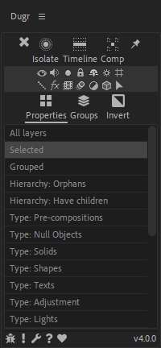
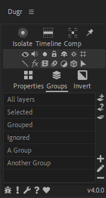
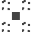

DuGR Help

Dugr lets you to tag the layers so they belong to groups. Those groups are listed in the panel, and it is easy to isolate them in the composition, change their attributes, etc.
Group lists
With the selector just above the list, you can select what is shown in the list.
 Properties allows you to select the layers by type, property or hierarchy or other After Effects attributes.
Properties allows you to select the layers by type, property or hierarchy or other After Effects attributes.

 Groups contains the list of tags/custom groups you’ve added.
Groups contains the list of tags/custom groups you’ve added.

You can select the group of layers you need to manipulate from this list.
The  Invert button on the right-hand side can be used to manipulate layers not contained in the selected groups.
Invert button on the right-hand side can be used to manipulate layers not contained in the selected groups.
The  And
And  Or button on the right-hand side is used to choose how multiple group selection is made, either using all groups (and) or any group (or).
Or button on the right-hand side is used to choose how multiple group selection is made, either using all groups (and) or any group (or).
Isolation
The top line buttons are toggles to isolate the layers belonging to the selected groups.
 Isolate isolates the layer both in the timeline and the comp viewer panel. Layers outside of selected groups are both hidden and set to shy mode.
Isolate isolates the layer both in the timeline and the comp viewer panel. Layers outside of selected groups are both hidden and set to shy mode. Timeline isolates the layer only in the timeline. Layers outside of selected groups are set to shy mode.
Timeline isolates the layer only in the timeline. Layers outside of selected groups are set to shy mode.-  Comp isolates the layer only in the comp viewer panel. Layers outside of selected groups are hidden.
 The pin button toggles the Interactive or Sticky mode. When checked, the isolation is updated as soon as you change the group selection. When disabled, you have to manually change the isolation mode after changing group selection. With heavy compositions containing a lot of layers, keeping it disabled improves the performance.
The pin button toggles the Interactive or Sticky mode. When checked, the isolation is updated as soon as you change the group selection. When disabled, you have to manually change the isolation mode after changing group selection. With heavy compositions containing a lot of layers, keeping it disabled improves the performance. The exit isolation button can be used to de-activate the isolation when not in interactive / sticky mode.
The exit isolation button can be used to de-activate the isolation when not in interactive / sticky mode.
Note
You can assign keyboard shortcuts to these functions, using the provided Scriptlets!

Auto-Select / Filter by layer type, property, attribute…

Auto-Select / Filter by animation properties…
A lot of other properties and attributes are available to select and isolate specific layers.

DuGR is fully compatible with Duik Ángela, which automatically assigns layers to useful DuGR custom groups.

You can also assign keyboard shortcuts to DuGR features.
Interactive / Sticky mode
There are two ways to use DuGR to isolate layers:
- In standard mode, when the pin button is unchecked, clicking on the isolation buttons isolates the selected groups; but nothing will change if you change the group selection, unless you click again on the isolation buttons. To exit the isolation mode, either select the “All layers” group, or click the exit button.
- In interactive / sticky mode, when the
 pin button is checked, changing the selection of the groups instantly updates the isolation. Click again on the isolation buttons to exist the isolation mode.
pin button is checked, changing the selection of the groups instantly updates the isolation. Click again on the isolation buttons to exist the isolation mode.
Layer properties
The two middle lines of small icons can be used to quickly change the usual properties of the layers contained in the selected groups.
The extra  arrow icon selects the layers contained in the selected groups.
arrow icon selects the layers contained in the selected groups.
Managing custom groups
!
On the custom groups tab, a few extra buttons allow you to create, edit and remove groups.
Layer buttons
 Add selected layer to the current groups.
Add selected layer to the current groups. Select groups the current layers belong to.
Select groups the current layers belong to. Remove selected layers from the current group.
Remove selected layers from the current group.
Group buttons
 Create group.
Create group. Rename group.
Rename group. Remove group.
Remove group.
Bottom line icons
At the bottom line of the panel, a few icons are always there if you need them.
- Post a Bug Report if something goes wrong.
 Post a Feature Request if you have a good idea to share.
Post a Feature Request if you have a good idea to share. Go to the Settings panel to customize the script.
Go to the Settings panel to customize the script. Come here if you need Help.
Come here if you need Help. Click this if you like DuGR!.
Click this if you like DuGR!.